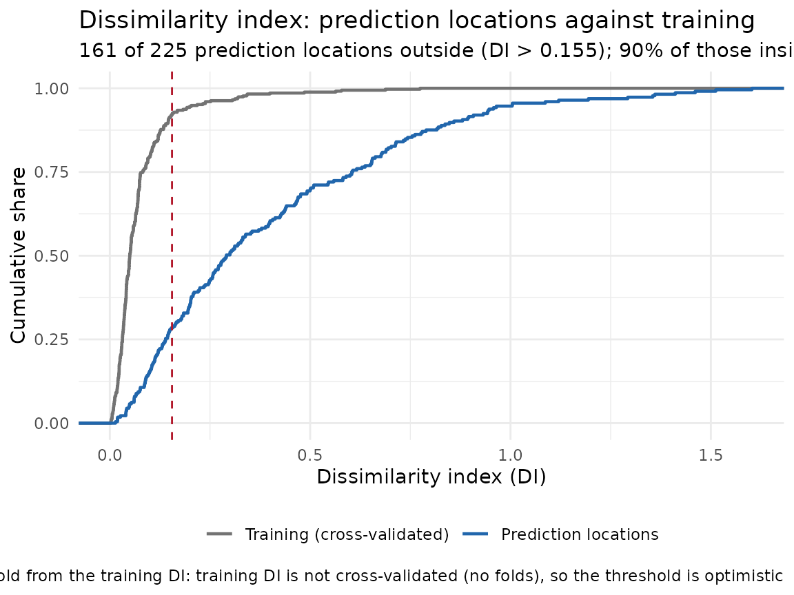

Four questions a score does not answer
A cross-validated RMSE tells you how far the predictions fell from the held-out values. It is silent on four things that decide whether the analysis holds up: whether the model left spatial structure in its residuals, whether the standard errors on aggregated values are the width they claim, whether a cell mean is the best estimate of that cell available, and where on the map the score applies at all.
A fixture and a model that is wrong in a known way
The response is driven by one real predictor and by a spatial field
the model never sees. b is noise. A linear model on
a and b therefore leaves the field in its
residuals, which is what the first diagnostic should detect.
library(sf)
library(spatialkit)
set.seed(11)
n <- 350
xy <- data.frame(x = runif(n, 0, 1000), y = runif(n, 0, 1000))
D <- as.matrix(dist(xy))
field <- as.numeric(t(chol(exp(-D / 70) + diag(1e-8, n))) %*% rnorm(n))
xy$a <- rnorm(n)
xy$b <- rnorm(n)
xy$z <- 1.5 * xy$a + field + rnorm(n, sd = 0.3)
pts <- st_as_sf(xy, coords = c("x", "y"), crs = 32632)
lm_fit <- function(train_sf, response_var = "z", predictor_vars = c("a", "b")) {
d <- st_drop_geometry(train_sf)
fml <- as.formula(paste(response_var, "~",
paste(predictor_vars, collapse = " + ")))
new_spatial_fit(
subclass = "lmsurf_fit",
engine = lm(fml, data = d),
formula = fml,
response_var = response_var,
predictor_vars = predictor_vars,
data_sf = train_sf
)
}
predict.lmsurf_fit <- function(object, newdata = NULL, ...) {
if (is.null(newdata)) return(fitted(object$engine))
as.numeric(predict(object$engine, newdata = st_drop_geometry(newdata)))
}
residuals.lmsurf_fit <- function(object, ...) residuals(object$engine)
fitted.lmsurf_fit <- function(object, ...) fitted(object$engine)
for (g in c("predict", "residuals", "fitted"))
registerS3method(g, "lmsurf_fit", get(paste0(g, ".lmsurf_fit")))
fit <- lm_fit(pts)1. Structure left in the residuals
mi <- residual_morans_i(fit)
mi## Residual Moran's I = 0.4480 (E[I] = -0.0029, sd = 0.0253)
## z = 17.841, p = 3.38e-71
## null: residual moments, exact for these residuals; n = 350, df = 347, design rank 3
## residual kurtosis 3.152 (3 = Gaussian)
## weights: 350 x 350 dgCMatrix, 8 neighbour(s) per row; not retained, keep_weights = TRUE to keep itA large positive Moran’s I says nearby residuals resemble each other, so the model is missing something that varies smoothly across the map. Here that is the simulated field, by construction.
Three parts of the print earn attention. The null
says which moments the p-value came from: residual moments
condition on the design matrix and are exact for OLS residuals,
randomisation moments treat the residuals as exchangeable
and are an approximation for any model. null = "auto"
chooses per fit, so read what it chose. The design rank
is the rank of the rebuilt model matrix, which is where the residual
degrees of freedom come from. The kurtosis says how far
the residuals sit from the Gaussian case the moments assume, with 3 as
the reference.
The weight matrix is and is described instead of returned. Ask for it when you want to reuse the same neighbours:
mi_w <- residual_morans_i(fit, keep_weights = TRUE)
dim(mi_w$weights)## [1] 350 350
mi$weights_summary[c("n", "storage", "neighbours", "kept")]## $n
## [1] 350
##
## $storage
## [1] "dgCMatrix"
##
## $neighbours
## [1] 8 8
##
## $kept
## [1] FALSEweights_summary is present either way, so a
NULL in weights is always explained.
2. Standard errors on aggregated values
Aggregate the points into cells and the naive standard error of each cell mean is , which assumes the points in a cell are independent. On an autocorrelated field they are not, and the effective sample size is smaller than the count.
hull <- clip_target_for(pts, expand = 0.02, quiet = TRUE)
tess <- build_tessellation(pts, boundary = hull, method = "square",
approx_n_cells = 24, quiet = TRUE)
asg <- assign_features_to_polygons(pts, tess$cells)
c(cells = nrow(tess$cells), points = nrow(asg),
median_per_cell = median(table(asg$poly_id)))## cells points median_per_cell
## 25 350 14summarize_by_cell() takes a design effect, and three
settings are worth comparing on the same cells.
sac <- estimate_sac_range(pts, "z")
iid <- summarize_by_cell(asg, "z", cells_sf = tess$cells, deff = 1)
kish <- summarize_by_cell(asg, "z", cells_sf = tess$cells, deff = "kish")
vgm <- summarize_by_cell(asg, "z", cells_sf = tess$cells, deff = "variogram",
sac = sac)
data.frame(n = iid$n,
iid = round(iid$..se_resp_z, 3),
kish = round(kish$..se_resp_z, 3),
variogram = round(vgm$..se_resp_z, 3))[1:5, ]## n iid kish variogram
## 1 14 0.546 1.072 1.272
## 2 11 0.447 0.805 0.963
## 3 18 0.381 0.822 0.987
## 4 16 0.592 1.222 1.467
## 5 8 0.527 0.854 0.996The median cell’s standard error is 1.96 times wider under
kish and 2.35 times wider under variogram than
the independent-sampling one. A confidence interval built on the naive
number is about half the width it should be on this field.
deff = "kish" estimates an intra-class correlation from
the within-cell and between-cell variance and applies Kish’s factor.
deff = "variogram" takes the correlation from the fitted
variogram model, so it uses the spatial structure rather than the cell
labels. The choice is recorded:
## List of 6
## $ method : chr "variogram"
## $ deff : num [1:25] 4.12 3.49 5.11 4.65 2.71 ...
## $ deff_rows: num [1:25] 4.12 3.49 5.11 4.65 2.71 ...
## $ rbar : num [1:25] 0.24 0.249 0.242 0.243 0.244 ...
## $ crs :List of 2
## ..$ input: chr "EPSG:32632"
## ..$ wkt : chr "PROJCRS[\"WGS 84 / UTM zone 32N\",\n BASEGEOGCRS[\"WGS 84\",\n ENSEMBLE[\"World Geodetic System 1984 "| __truncated__
## ..- attr(*, "class")= chr "crs"
## $ max_n : int 500
attr(kish, "icc")$resp## [1] 0.1692353A cell whose design effect reaches its point count carries no
information about the variance at all, and its standard error is
NA. That is a statement about the cell, so the fix is
bigger cells or more points, not a different setting.
3. Is the cell mean the best estimate of the cell?
The plain mean weights every point in a cell equally and ignores
everything outside it. Block kriging uses the fitted variogram, borrows
from neighbouring cells, and reports a variance derived from the spatial
model. kriging_adequacy() runs both and compares them.
ka <- kriging_adequacy(asg, "z", tess$cells, k = 4, seed = 1)
ka## Block-kriging adequacy over 25 cells (350 points, nmax 50)
## variogram: Nug(2.34, 0) + Exp(1.49, 208); sill 3.83, nugget 2.34 (61%), range 623.7
## kriging variance / sill: median 0.031, range 0.021-0.054; 0 cell(s) above 0.5
## kriging variance exceeds s^2/n in 4 of 25 populated cell(s)
## kriged minus plain mean: |shift| > 1 SE in 4 of 25 cell(s), > 2 SE in 0
## empty cells: 0 (kriged estimate and variance available for each)
## blocked CV (block_kfold, 4 folds, 350 points): var of standardised error 0.96 (1 = kriging variance correct; above 1 = understated), mean -0.04, RMSE 1.76Three readings. kr_var against the naive
se^2 says whether the naive standard error was optimistic.
kr_shift is how far the kriged estimate moved from the
plain mean, in units of the naive standard error, and a shift beyond one
or two of those says the mean and the spatial model disagree about that
cell. The blocked cross-validation at the end standardises each held-out
error by its kriging variance: a variance of 1 means the kriging
variance is right, and above 1 means it is understated.
head(st_drop_geometry(ka)[, c("n", "mean", "se", "kr_pred", "kr_var", "kr_shift")], 4)## Block-kriging adequacy (subset; the fitted summary is not carried by a subset)
## n mean se kr_pred kr_var kr_shift
## 1 14 1.1020196 0.5463243 0.9482019 0.1388294 -0.2815501
## 2 11 0.3804887 0.4470487 0.5214361 0.1528287 0.3152841
## 3 18 1.0791003 0.3805235 0.8801156 0.1183915 -0.5229235
## 4 16 1.5055114 0.5920044 1.2414298 0.1078660 -0.4460805An empty cell still gets a kriged estimate and variance, which is the practical reason to run this: a tessellation fine enough to be useful usually has cells with no observation in them.
4. Where the score applies
A cross-validated number describes the region the training data
covers. For predictions made anywhere else, it describes nothing.
area_of_applicability() marks the difference, following
Meyer and Pebesma (2021).
grid <- create_grid_polygons(hull, target_cells = 200, type = "square")
gp <- suppressWarnings(st_centroid(grid))
set.seed(2)
gp$a <- rnorm(nrow(gp))
gp$b <- rnorm(nrow(gp), mean = 3) # shifted well outside the training range
aoa <- area_of_applicability(gp, model = fit)
aoa## Area of applicability (Meyer & Pebesma 2021)
##
## predictors : 2 (a, b)
## weighted : no (all predictors count equally)
## training : 350 points
## reference : nearest other training point (no folds supplied)
## normaliser : 1.7610 (mean pairwise distance)
## threshold : 0.1552 (outlier-removed max of training DI)
##
## 64 of 225 prediction points inside the AOA (28.4%)
##
## Predictions outside the AOA are extrapolations; the cross-validated
## performance estimate does not cover them.
plot(aoa)
Shifting one predictor three standard deviations moves most of the
grid outside the domain the model was trained on. The dissimilarity
index DI is on aoa$aoa, alongside the logical
AOA, and threshold is the cutoff derived from
the training data.
One trap worth stating plainly. AOA is NA
wherever a predictor was missing or non-finite, !NA is
NA, and R skips NA positions in a subscripted
assignment. Test for TRUE:
inside <- !is.na(aoa$aoa$AOA) & aoa$aoa$AOA
c(inside = sum(inside), outside_or_unknown = sum(!inside))## inside outside_or_unknown
## 64 1615. Two ways to leak
Coordinates as predictors. A model given
x and y can reproduce the training surface by
memorising location, and random folds will not detect it.
fit_rf_model(include_coords = TRUE) warns for this reason.
Score any such model with blocked folds, and read
vignette("spatial-cross-validation") for what the blocking
has to be wide enough to do.
Selection outside the fold. Choosing predictors on
the whole data set and then cross-validating the chosen set gives the
selection a look at every test row.
select_features_forward() does the selection inside the
resampling, and it takes the fold scheme as an argument for the same
reason the outer loop does:
# select_features_forward() calls fit_fn(train_sf, vars), so the learner above
# needs an adapter that puts `vars` in the predictor slot.
sel_fn <- function(train_sf, vars) lm_fit(train_sf, "z", vars)
sel <- select_features_forward(pts, "z", c("a", "b"), fit_fn = sel_fn,
k = 4, method = "block_kfold", seed = 1)
sel$selected## [1] "a"Its inner folds default to the scheme you pass. Passing
random_kfold there produces a warning, because a leaky
inner loop can select a variable for being spatially close to the
response and an honest outer loop will then report a respectable number
for a dishonestly chosen feature set.
Next
vignette("spatial-cross-validation") covers fold schemes
and block sizing. vignette("resolution") covers choosing
the cell count these diagnostics are computed over.
?residual_morans_i documents the two nulls and when each is
exact, ?summarize_by_cell derives the design-effect
correction and reports its measured coverage, and
?area_of_applicability covers the weighting and the
threshold.